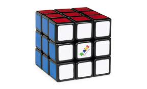

Rubik's Cube
Rubik's Cube
The Rubik's Cube is a 3D combination puzzle originally invented in 1974 by Ernő Rubik. It consists of six faces covered by nine stickers of six solid colors. The goal is to twist and turn the cube so that each face is a single, uniform color. Solving the cube involves applying algorithms that move specific layers without disturbing the rest of the puzzle. There are many variations, including the 2×2, 4×4, and 5×5 cubes. Competitive "speedcubers" use techniques and finger tricks to solve the cube in just seconds.
Rubik's Cube

The Rubik's Cube has become an icon of intelligence, creativity, and problem-solving. It has inspired mathematical studies, robotics applications, and even art installations. Online solvers and tutorials help beginners learn the basic layer-by-layer method, while advanced cubers practice CFOP, Roux, or ZZ methods. With over 43 quintillion possible combinations, the Rubik’s Cube remains one of the world’s most fascinating puzzles.